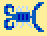
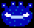
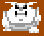
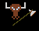
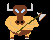
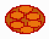
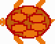
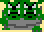

Scorzion

Large two-tailed scorpions live in the desert to the west. (For inspiration
see
Pepe, the Two-Tailed Scorpion.)
Beholder

Beholder-like creature. (Possibly level boss.)
Ghost

Color-shifted troll possibly carrying chains.
Mummy
Originally a mummy was planned for the level boss. Matt Sullivan named
him Apalak Ramtusk I, the mighty ruler of the first great troll empire.
He'll probably be able to throw his wrappings to stun the character and
attack in hand-to-hand. Unfortunately no one was able to develop a good
picture for a mummy. Although it probably wouldn't be used for the pyramid
anymore a mummy is still desirable.
Fire Elemental
Another creature that no good image could be made.
Toad
Some sort of jumping creature was wanted for the mountain area.
Currently a toad is used. Other possibilities were mountain goats or
a goat-man. Still need a name for the creature.
Spider
One can't have a spider tree without spiders. Images so far aren't
quite satifying.
Minotaur


The first image is the beginings of a minotaur. The second completes the
head but doesn't look good enough and no ideas for animation have occured.
Turtle


Here is the initial sketch of a turtle boss for the waterfall area.
Two-Headed Troll

The two-headed trolls are used as guards by Granak. They aren't planned
to be encountered but this image was done up one night and perhaps could
be used for an intro or some thing.